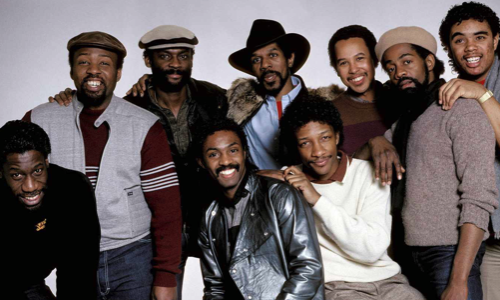
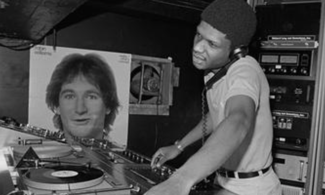
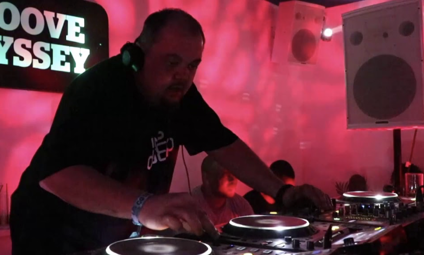
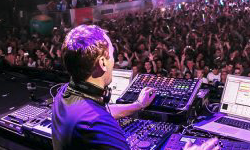

Electronic Music
Due to the invention and popularisation of the synthesizer, combined with the prominence of Club Culture 1960s and 1970s, electronic music grew to enjoy the same arena status as Rock & Roll towards the end of the 20th century. Below is an overview of some popular sub-genres, click the the titles and images for more information!
-
Post-Disco
The highly publicized 'death of disco' in 1979 prompted a musical response in artists looking to push the envelope of what dance and club music could be. Artists that had survived Disco's demise began to incorprate synthesizers and drum machines into their writing and performing process in order to scale down the previously expensive and highly polished production quality of Disco. Notable artists include Kool & The Gang, Earth, Wind and Fire, and Gwen Guthrie.

Example: Kool & The Gang: Misled (1984)
-
House
Taking inspiration from DJ culture in the UK and Caribbean, as well as the hip hop DJs rising to fame on America's East Coast, Post Disco began to morph into house through Nightclubs like Chicago's 'Warehouse' and New York's 'Paradise Garage'. Pioneering DJs in the House Music revolution were Larry Levan and Frankie Knuckles.

Example: Robyn S: Show Me Love (1993)
-
Techno
Techno was born in Detroit, often thought to mimik the sound and atmosphere of the 'motor city'. Techno is appealing through it's cold, repetitive motifs and high sense of tension throughout long, four to the floor tracks. Pioneers of Techno include Kevin Saunderson, Derrik May, Juan Atkins and Jeff Mills.

Example: Jeff Mills: The Bells (1996)
-
UK Garage, Drum'n'Bass, Jungle
Throughout the late 1980s and 1990s, the United Kingdom put its own spin on the music that was emerging from Europe, the United States, and other music trends such as sound system culture in the Caribbean. This led to a wave of reactionary subgenres in the UK such as UK Garage, Drum'n'Bass, Jungle, Grime and Dubstep.

Example: Indo: R U Sleepin' (Grant Nelson Remix) (1996)
-
Trance
Trance came about as reaction to both the British subgenres and the early German techno and Hardcore artists of the 1990s. Trance is notable for it's euphoric composition, seperate by multiple peaks and drops. Notable trance artists include Paul Van Dyke, Tiësto and Armin Van Buuren.

Example: Humate: Love Simulation (Paul Van Dyke Remix) (1996)